### Integration Workshop
Will Usher, Tom Russell, Roald Schoenmakers
---
# Agenda
Day 2: Morning (09:30 - 10:30)
1. Integration Progress So Far (Will) - 10 mins
1. The Software Model Integration Framework (Roald) - 10 mins
1. Plenary discussion - 40 mins
- Reproducible data pre-process pipelines (Tom)
- NISMOD 2 release schedule (Roald)
- Enabling the collaborative papers (Will)
---
# NISMOD v2.x
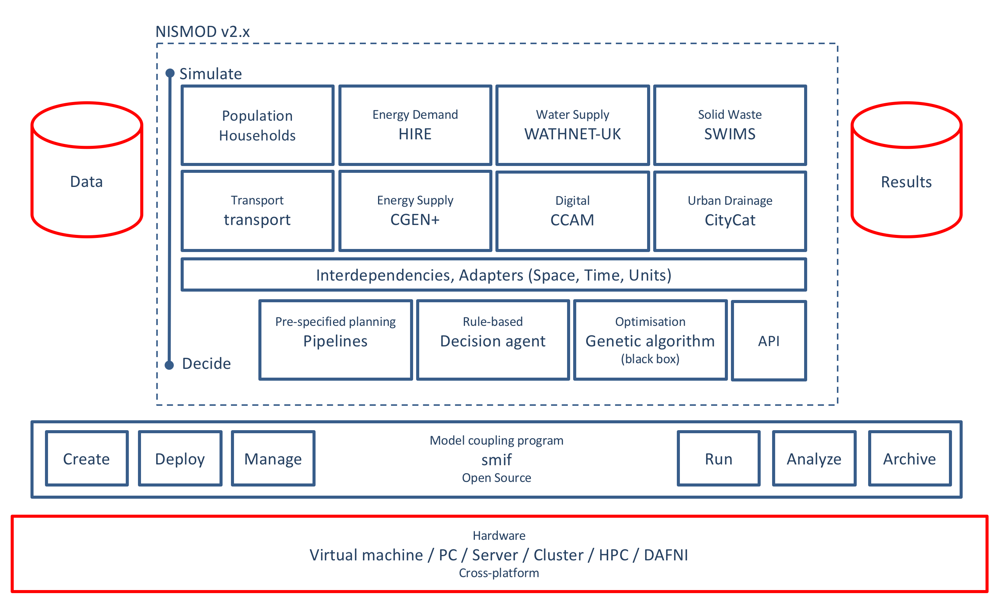
???
- This is where we want to get to
- We have a number of infrastructure simulation models
- They are fed data from a datastore of some kind
- They produce results
- We defined dependencies between the models, and define conversion functions
(adapters) to allow the outputs from one model to feed into the inputs of another
- We'll provide a number of decision modules that work across each of the infrastructure
sectors
- Our work here is supported by the simulation model integration framework (smif)
- Smif provides the functionality to create, deploy, manage system of system models,
and run, analyze and archive model runs using these system-of-system models
- All of this runs on hardware, yet to be defined
---
# NISMOD v2.1
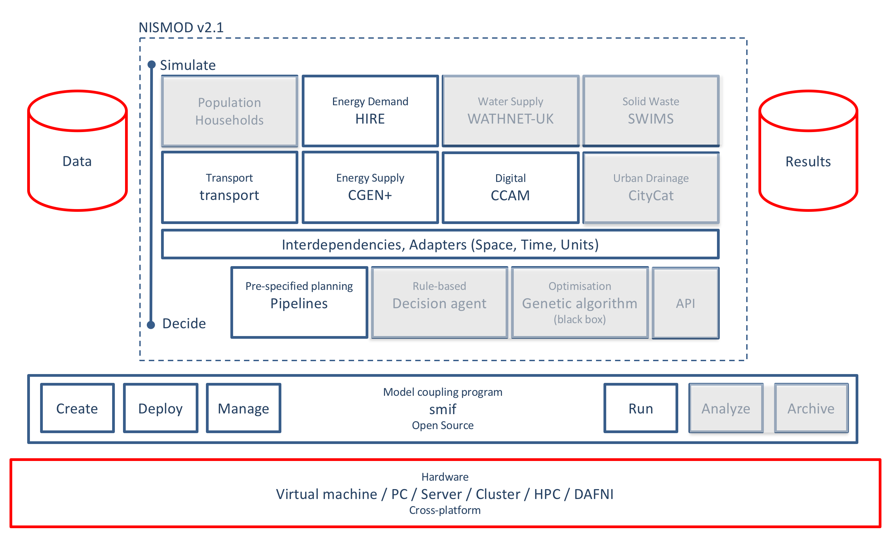
---
# NISMOD v2.1
???
We recently released NISMOD v2.1 containing integrated versions of energy demand and supply,
digital comms, and transport.
Currently:
- No interdependencies (yet) defined
- Dependencies defined between energy demand and supply
- Automatic conversion of (SI) units
- Implicit/Explicit spatial and temporal conversion
- Common scenarios feed into each of the models
---
# Spatial and Temporal Conversions
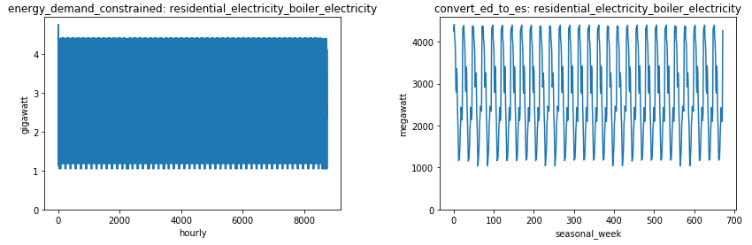
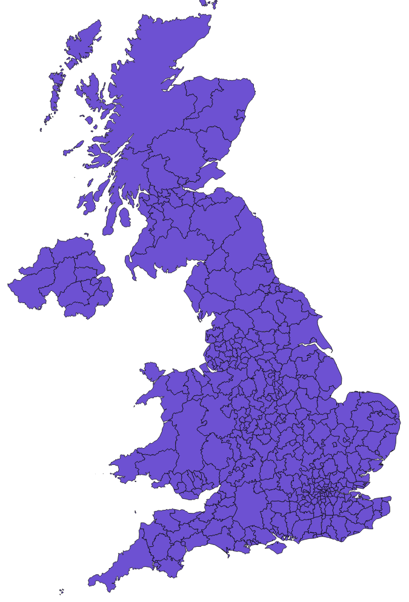
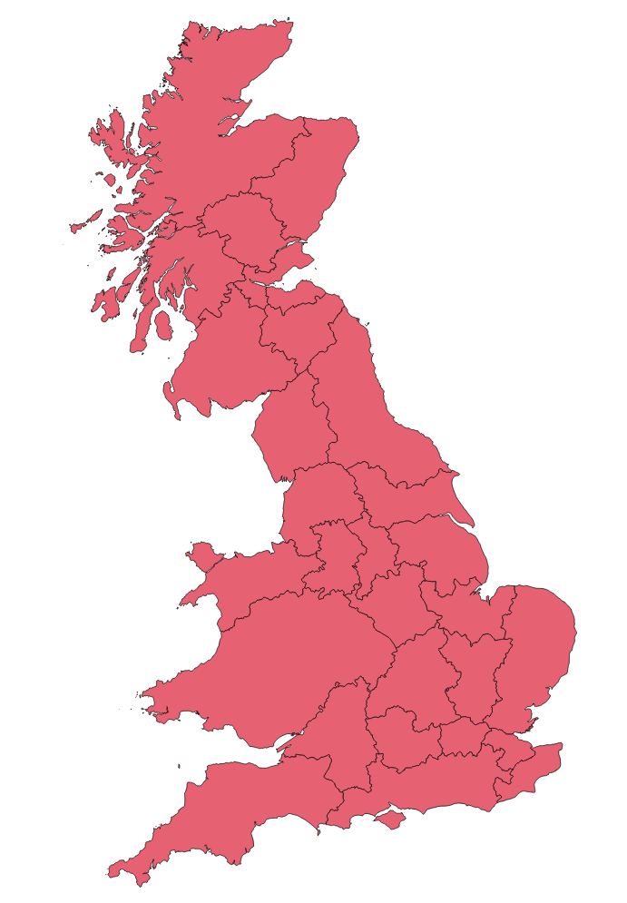
---
# Example Results
---
# Sector Model Progress

---
# Lessons we have learned...
- Units are important
- Validating data inputs make debugging a LOT easier
- sign
- magnitude
- range
- Keep it simple - by splitting into stages
- e.g. energy demand has 63 outputs, energy supply requires 8 inputs aggregated from 26 energy demand outputs
---
## Thanks!
Questions?
william.usher@ouce.ox.ac.uk
---
### The Software Model Integration Framework
Roald Schoenmakers
---
# What is Smif
* Smif - Software Model Integration Framework
+ Connect System Models
+ Configure a System-of-System Model
+ Execute System-of-System Model Runs
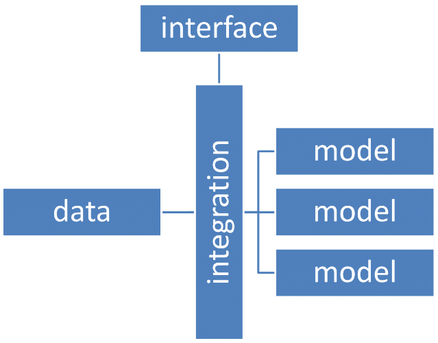
???
Hi I'm Roald, and I am going to introduce you to Smif, the Software Model Integration Framework.
Smif is a framework that we have developed in the Mistral program at the ECI in Oxford to handle the creation of system-of-systems models,
this piece of software facilitates the itegration process and helps us to build Nismod2.
Smif is a framework that acts as the integration layer between system models.
It connect model inputs and outputs, takes care of dependencies and provides data to models in the correct spatial-temporal resolution.
A model in this case would be for example an energy-demand model, that takes populations per county. And the data could be a database that provides population per local area district.
The integration layer is Smif and the interface is the Smif app.
Today I will be demonstrating the user-interfaces that we have developed to help our users, which many of you are or hopefully will be,
to setup and run a system-of-systems model.
---
# Build a System-of-System model
Smif App
???
[Don't stop the video!]
Smif app is the user interface that helps to setup a system-of-systems model.
In the following video, I will demonstrate the process of creating a basic energy-demand/supply system-of-systems model, that is driven by population scenarios.
The video will be fairly quick, my goal is not to get into details, but I just want you to get an impression of the workflow that we have in place for system modellers.
>> Smif app can be opened from the commAAnd-line interface, this commAAnd opens the smif welcome screen
[Stop at project overview]
>> The project configuration that I have prepared contains two simulation models (energy-supply and energy-demand model) and a scenario set for population
>> Lets have a look at the population scenario set.
>> The population set contains a facet for a population, which is sourced by three different data set (a low, medium and high scenario)
[Stop at project overview]
>> I have prepared this project with two simulation models.
>> The model contain a path to a wrapper file that implements the interface to this model
>> There are inputs and outputs defined, each with a temporal and spatial resolution
>> A similar setup can be found for the energy-demand model
>> The next step now is to create a system-of-systems model
>> A system-of-systems defines the dependencies between scenarios and simulation models
>> In this example We are going to couple the population scenario, to the energy-demand model
>> and the energy-demand model to the energy-supply model
>> Now that we have a system-of-system model configuration, we can setup a Model Run configuration
>> A model run brings together a system-of-systems model definition with timesteps and a choice of scenarios
---
# Execute Model Runs
Smif Run
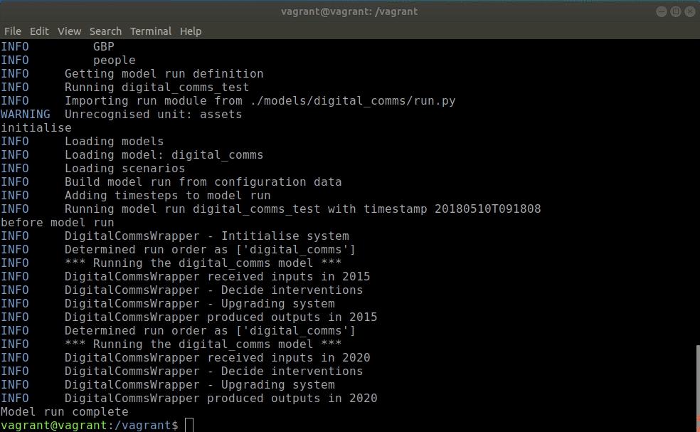
???
So once you have created your system-of-systems model using the Smif App, you can
go back to the commAAnd line interface and actually run the model.
Smif run is a program that can be started from the commAAnd line, and it helps to run a system-of-systems model
>> **smif** Shows all of the available commAAnds
>> **smif list** Shows all of the available model Runs, like the one I just demonstrated
>> **smif run** Starts a modelrun and shows when this is demonstrate
>> **smif -v run** Prints debug information to the commAAnd line interface and gives you a more detailed report of what the modelrun system is doing
---
# Execute Model Runs
Smif Results
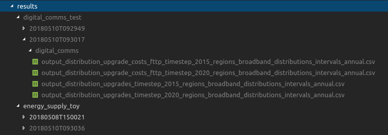
???
After a succesful modelrun, modelrun results will be written to the filesystem. Nicely ordered by modelname, output, timestep and temporal/spatial resolution
In the future it will also be possible to connect Smif to a datastore instead of writing to filesystem.
---
# Some last notes
* Smif is open-source (MIT-license)
* Current version v0.7.6
* https://github.com/nismod/smif
???
So I hope this short demonstration has provided you with a sense of what Smif is and how its going to build Nismod2.
I just wanted to make some last remarkt.
Smif is open source, the current version is v0.7.6 is available on Github.
--
* Available on PyPi `pip install smif`
* Sample project available!
???
Smif is available on the Python package index and there are sample projects to get started.
---
# Further steps
* Consult with Sector Modellers
* Ideas
+ Modelrun user-interface (currently only Command Line Interface)
+ Data visualisation
+ Tools to support integration debugging
???
Further steps
The features that are currently in Smif provide a good basis to start building Nismod2.
>> As the integration process goes on, we will consult with Sector Modellers to find where we could improve Smif
>> Some of the ideas we have are:
- Extending the Smif App with a Modelrun Run interface
- Add Data visualisation capabilities for configuration and results
- Design tools that support debugging integrated system-of-systems model
---
# Discussion (10 mins)
## Reproducible data processing pipelines
--
- Why is this important?
--
- What is difficult about this? Anything currently blocking progress?
--
- How can we learn to do this? Any good examples?
---
# Discussion (10 mins)
## NISMOD2 releases
???
A challenge of developing a highly integrated model like Nismod2,
is that at some point the model will be used for research, while others members of the consortium still want to make changes to the model.
To enable this we think it is necessary to release the model regularly.
--
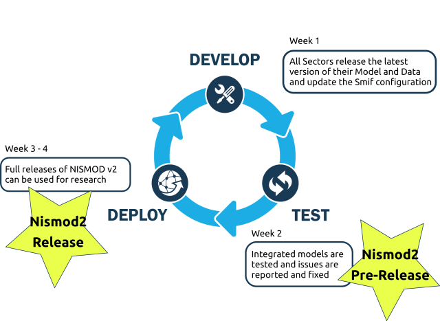
???
We have started to formalise the following process that releases a version of Nismod2 every cycle
* In the development phase modellers may make changes to the model, this phase ends with a Pre-release of Nismod2
* This pre-release version is then tested and then a final release of Nismod2 is deployed
* This process repeats every period
>> One of the questions that we are currently asking is, how often should we release new versions of Nismod?
>> and in support of that how can we best tweak or clarify a release schedule to support this process?
Does anyone want to comment on this or has ideas?
--
- How frequently does the Nismod2 need to be released?
--
- How can we best tweak, clarify or support the release process?
---
# Discussion (10 mins)
## Internal collaborations - what does NISMOD need to do to enable collaboration?
--
+ Who are your collaborators?
--
+ What do you want to do?
--
+ What does that mean for NISMOD v2?
???
- interdependencies
- narratives - technology learning, governance
- strategies and decisions
- explorative pathways?
- optimal systems?
- robust portfolios?
- thousands of runs?
---
## Thanks!
Questions?
[https://nismod.github.io/presentations/integration-workshop.html](https://nismod.github.io/presentations/integration-workshop.html)
william.usher@ouce.ox.ac.uk
tom.russell@ouce.ox.ac.uk
roald.lemmen@ouce.ox.ac.uk
 ???
We recently released NISMOD v2.1 containing integrated versions of energy demand and supply,
digital comms, and transport.
Currently:
- No interdependencies (yet) defined
- Dependencies defined between energy demand and supply
- Automatic conversion of (SI) units
- Implicit/Explicit spatial and temporal conversion
- Common scenarios feed into each of the models
---
# Spatial and Temporal Conversions
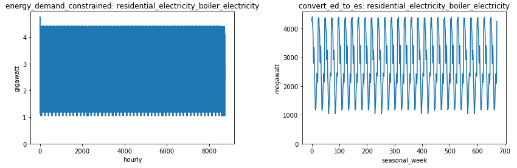
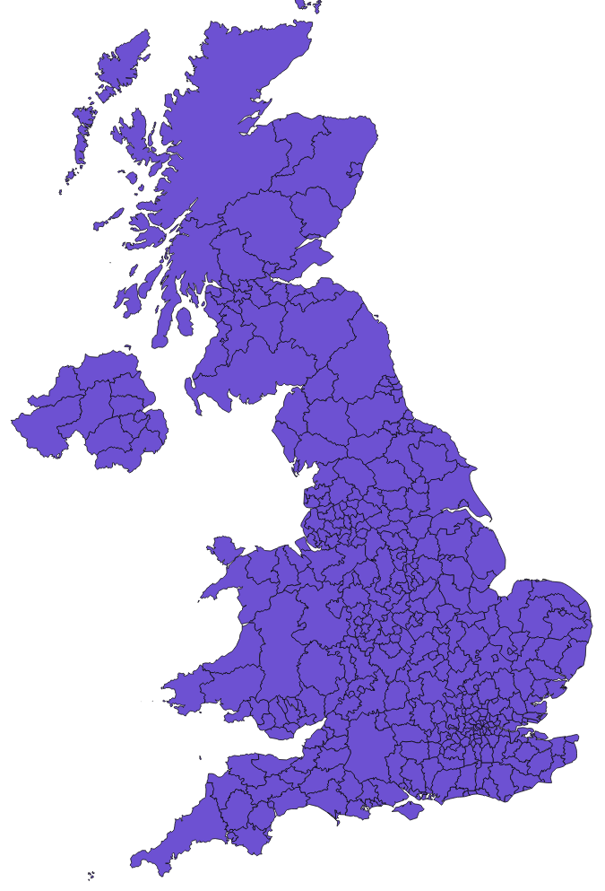
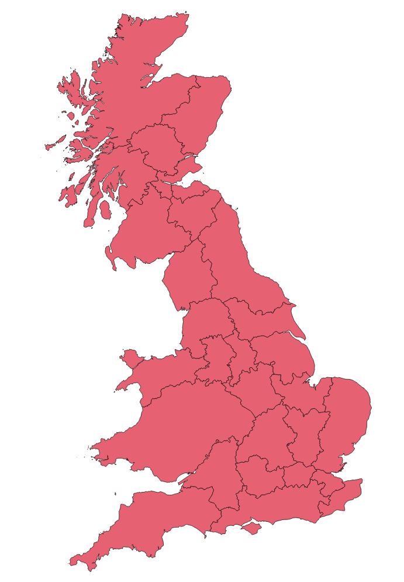
---
# Example Results
---
# Sector Model Progress

---
# Lessons we have learned...
- Units are important
- Validating data inputs make debugging a LOT easier
- sign
- magnitude
- range
- Keep it simple - by splitting into stages
- e.g. energy demand has 63 outputs, energy supply requires 8 inputs aggregated from 26 energy demand outputs
---
## Thanks!
Questions?
william.usher@ouce.ox.ac.uk
---
### The Software Model Integration Framework
Roald Schoenmakers
---
# What is Smif
* Smif - Software Model Integration Framework
+ Connect System Models
+ Configure a System-of-System Model
+ Execute System-of-System Model Runs
???
We recently released NISMOD v2.1 containing integrated versions of energy demand and supply,
digital comms, and transport.
Currently:
- No interdependencies (yet) defined
- Dependencies defined between energy demand and supply
- Automatic conversion of (SI) units
- Implicit/Explicit spatial and temporal conversion
- Common scenarios feed into each of the models
---
# Spatial and Temporal Conversions
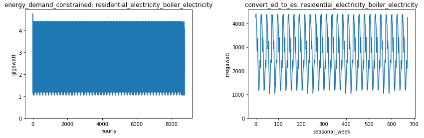
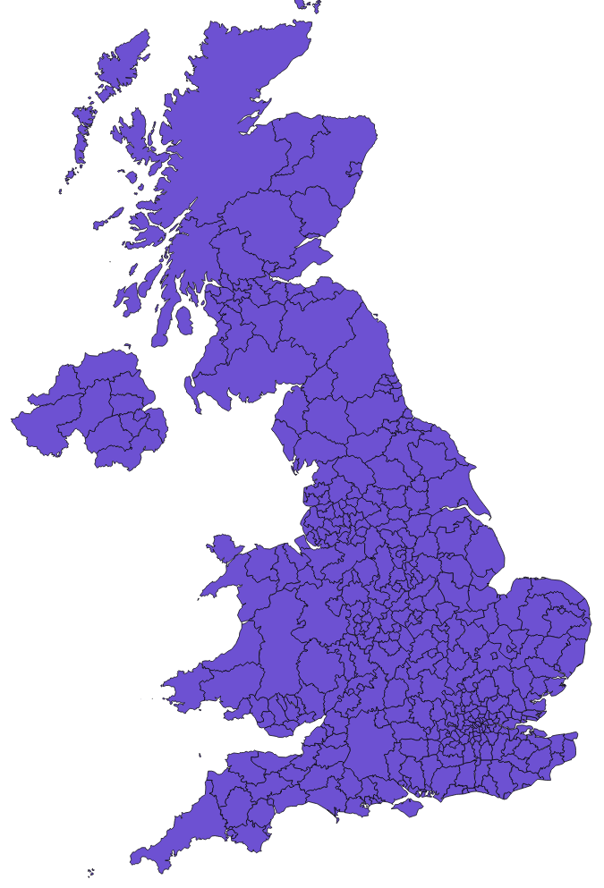
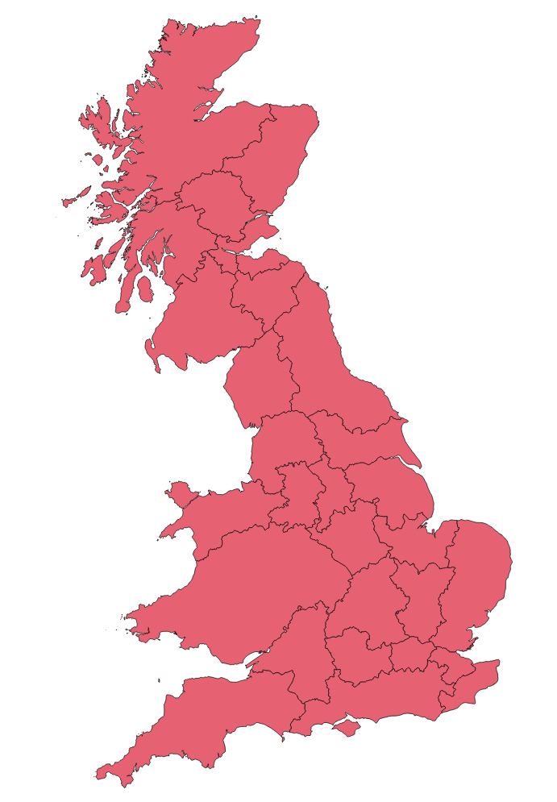
---
# Example Results
---
# Sector Model Progress

---
# Lessons we have learned...
- Units are important
- Validating data inputs make debugging a LOT easier
- sign
- magnitude
- range
- Keep it simple - by splitting into stages
- e.g. energy demand has 63 outputs, energy supply requires 8 inputs aggregated from 26 energy demand outputs
---
## Thanks!
Questions?
william.usher@ouce.ox.ac.uk
---
### The Software Model Integration Framework
Roald Schoenmakers
---
# What is Smif
* Smif - Software Model Integration Framework
+ Connect System Models
+ Configure a System-of-System Model
+ Execute System-of-System Model Runs